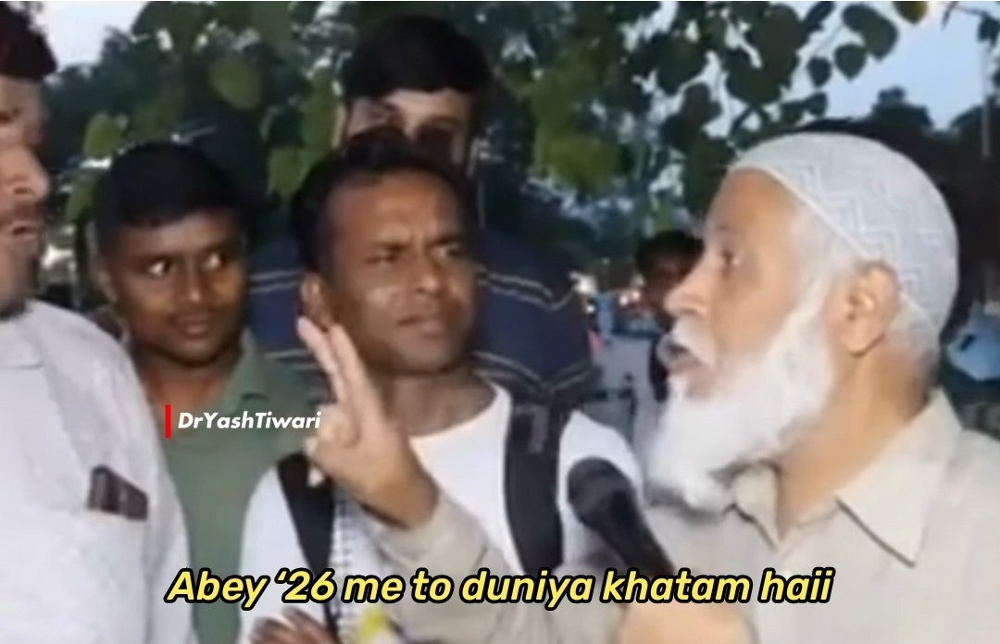

Temporal Displacement Terminal
Enter Traveler's Name
Target Year
Year must be 2026 or later, time travel backwards is too dangerous!
INITIATE TIME JUMP
Your browser does not support the video tag.

2026 mai to duniya khtam hai!
TRY AGAIN (SPOILER FREE)